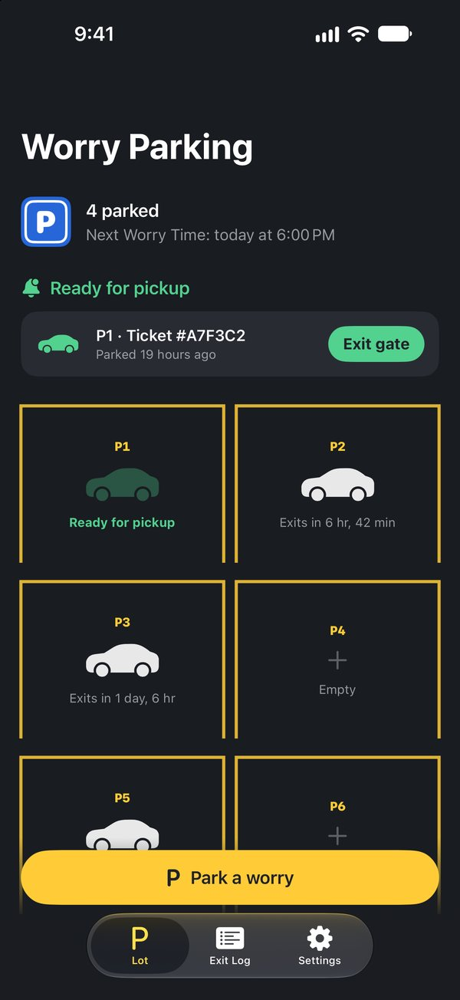
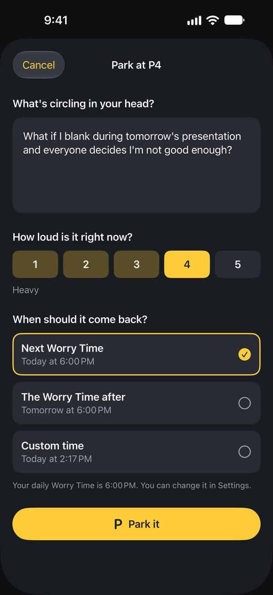
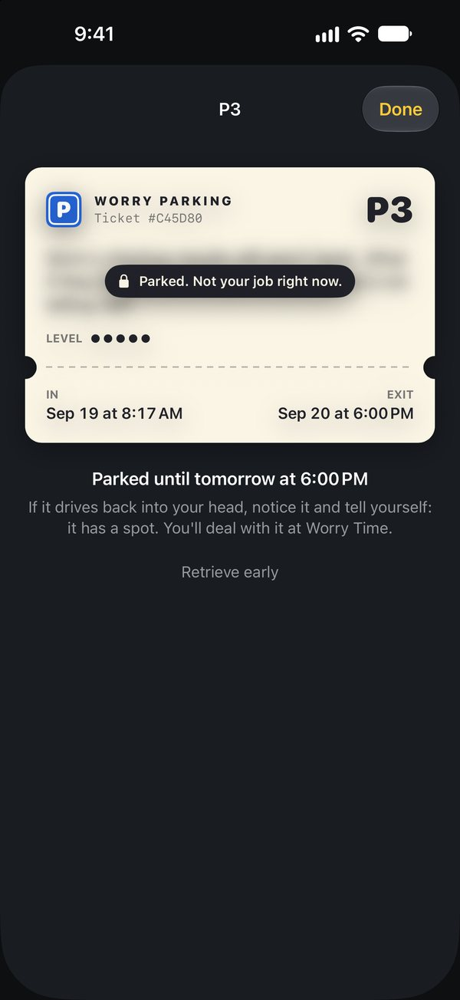
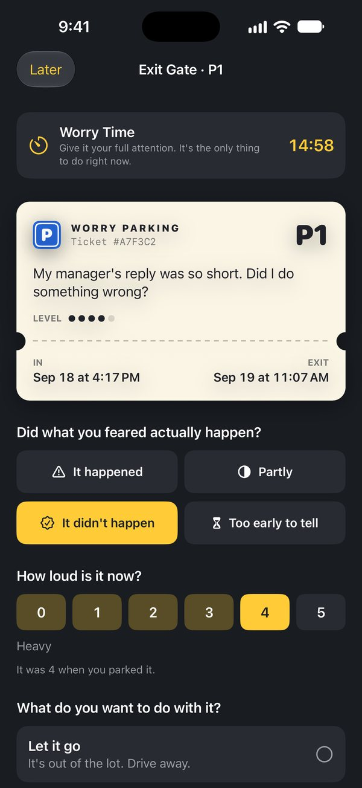
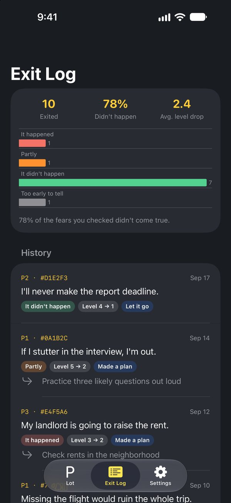

Endişelerini
sonraya park et
Geceleri kafanda dönüp duran endişeyi yaz ve otoparka bırak. Endişe Saati'nde onu sana geri getirelim. O zamana kadar onu taşımak zorunda değilsin.
Yakında App Store'da · iPhone
Nasıl çalışır
Bilişsel davranışçı terapideki (BDT) endişe erteleme tekniği, otopark olarak tasarlandı.
Yaz
Endişeyi kafanda duyulduğu gibi yaz ve sesinin ne kadar yüksek olduğunu 1'den 5'e kadar puanla.
Park et
Park edilen endişeler bulanık kalır. Biri tekrar kafana girerse ona şunu söyle: zaten bir yerin var.
Çıkış bariyeri
Endişe Saati'nde ona 15 dakika odaklan. Gerçekte ne olduğunu kontrol et; sonra gitmesine izin ver, plan yap ya da tekrar park et.
Göz at




Endişelerin bu iPhone'da kalır
Hesap yok, sunucu yok, reklam yok, analiz aracı yok. Bildirimler endişenin metnini asla içermez.
Uygulamada neler var
Tüm özellikler
Reklamsız
- Sınırsız park yeri
- Günlük Endişe Saati'nde teslim alma hatırlatıcıları, özel çıkış saatleri
- Çıkış bariyeri, Çıkış Günlüğü ve çıkış içgörüleri
Endişe Otoparkı bir kendi kendine yardım aracıdır; tıbbi cihaz veya profesyonel bakımın yerine geçen bir şey değildir. Zorlanıyorsan lütfen bir ruh sağlığı uzmanına başvur. Acil durumda yerel acil servisleri ara.